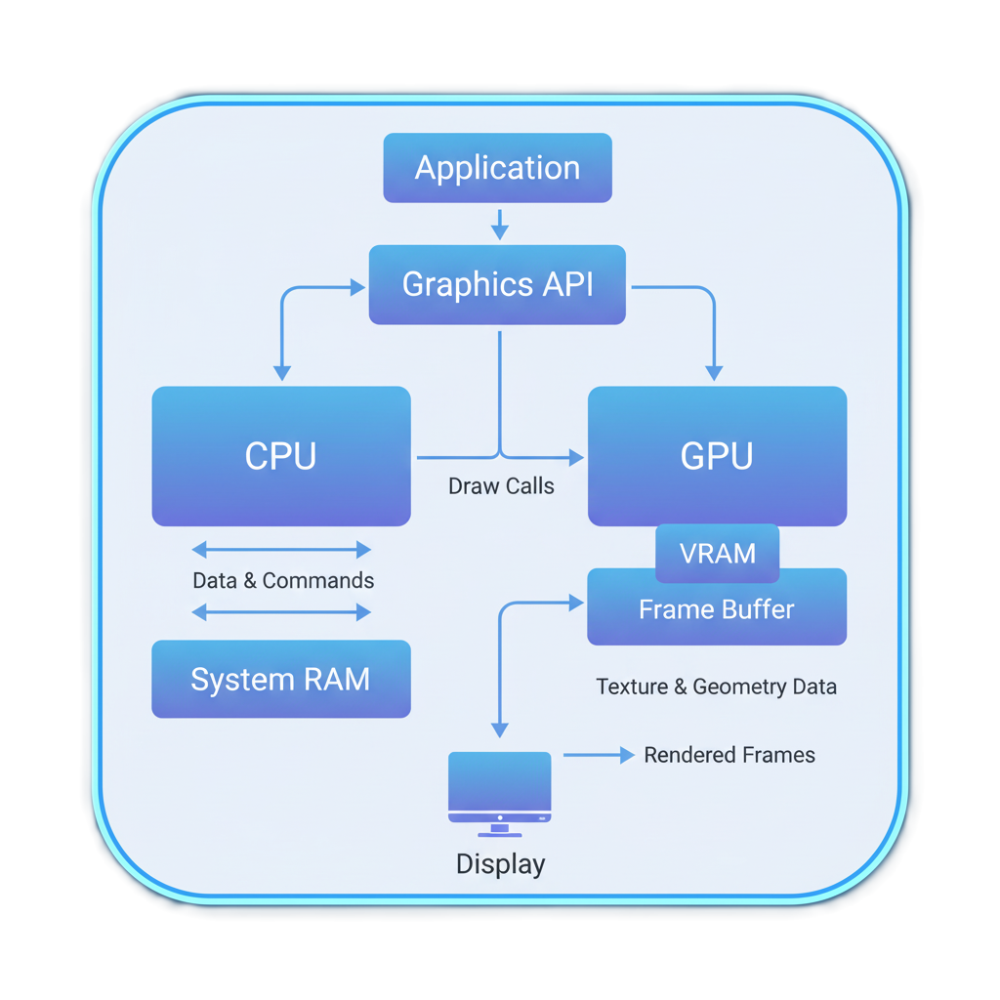
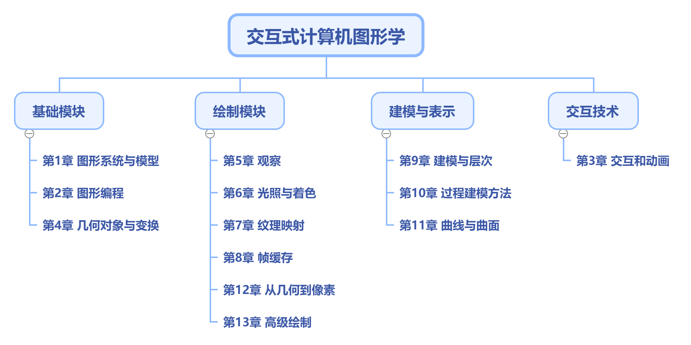

计算机图形学
第一章(1) 图形学概述
请看视频
电影特效 (阿凡达)
电子游戏(赛博朋克2077)
AI合成数据(NVIDIA)
科学可视化 (星际穿越)
Q:这背后的核心技术是什么？
计算机图形学
由代码和数学，在计算机中从无到有地创造出的虚拟世界。
内容提要
- 认识计算机图形学
看图回答问题
A: 实时渲染
B: 离线渲染
假设用同一台超级计算机，渲染这两张图片
哪一张会花费更长的时间？为什么？
什么是计算机图形学
研究如何利用计算机生成、处理和显示图像，其中涵盖了所需的硬件、软件和应用等
一切皆是像素
核心过程：从模型到像素
如何获得Bunny的各种效果？

请思考，要生成这些效果图，需要哪些硬件设备、软件及技术？
如何生成图
- 硬件，三维扫描仪，将实体模型转换为点云数据，用于模型数据获取
- 硬件，显卡，带图形处理单元(GPU)，并结合软件实现对各种高级渲染效果的计算及效果图的生成
- 软件，利用算法实现从点云数据到模型的重构，并基于OpenGL的方法实现模型的渲染
- 硬件，显示器，将显卡生成的效果图绘制输出
基本图形系统

- 输入设备：键盘、鼠标、3D扫描仪等
- 输出设备：显示器、VR头显、打印机等
- 存储设备：硬盘、SSD、云存储等
- 处理器：CPU、GPU等
- 软件系统：操作系统、图形API（如OpenGL、DirectX）、渲染引擎（如Unity、Unreal）等
图形系统(CPU和GPU)
- CPU：通用处理器，适合处理各种任务
- GPU：专用处理器，擅长并行处理图形渲染任务
图形处理单元(GPU)
是实现从模型到像素的核心
- 大规模并行计算架构
- 专门为图形渲染中的矩阵和向量运算优化
- 现代GPU包含可编程的着色器单元，让我们能自定义渲染效果
图形学的核心问题：从三维到二维
如何将一个虚拟的三维场景，转换成一张二维图片？
路径一：光栅化 (Rasterization)
- 核心思想: 以物体为中心 (Object-centric)。
- 过程: 把所有三角形“扔”到屏幕上，看它们覆盖了哪些像素。
- 关键词: 速度优先, 实时, 近似。
- 应用: 绝大多数电子游戏、UI界面。
路径二：光线追踪 (Ray Tracing)
- 核心思想: 以像素/眼睛为中心 (Image-centric)。
- 过程: 从眼睛出发，穿过每个像素发射光线，看它“看”到了什么。
- 关键词: 真实感优先, 基于物理, 离线。
- 应用: 电影特效, 建筑可视化, 产品设计。
光栅化vs光线追踪
课程内容体系
课程内容体系
基础模块
- 图形系统和模型的基础概念，认识图形学的实质，所要解决的问题等
- 图形学理论和概念所涉及的各种数学基础，包括向量、矩阵、齐次坐标等
- 图形学编程基础知识，包括常见的图形API，OpenGL编程基础知识，WebGL编程基础
- 几何对象的表示，二维和三维空间变换规则及相应的计算过程，这是图形学后续各种计算的基础
课程内容体系
建模与表示
- 建模，即在计算机中以图形的方式表示真实世界或虚拟世界中的各种对象与信息
- 表示，对模型而言，以点、线、面、体等各种几何元素通过不同组合进行表示，在计算机内部，这种表示形式可以有多种不同的格式，其实质是需要记录对象的坐标、几何元素的连接关系所对应的几何与拓扑信息等
- 简单形体和复杂场景的构建
- AutoCAD、3DsMax，Maya，Blender等建模软件
- 如汽车、飞机、火箭等的设计制作
课程内容体系
绘制
- 绘制，即将计算机中对象的数字几何模型转换为直观形象的图形或图像形式，在显示设备上，即数字几何模型的视觉可视化
- 绘制，是图形计算的核心和关键，需要考虑的因素众多，绘制效果越复杂，计算量越大
- 绘制过程
- 应用程序
- 几何处理
- 像素处理
课程内容体系
交互技术
- 交互, 即针对图形和图像，研究合适的输入方法和操作方法，实现友好的人机界面
- 交互技术包括
- 定位技术, 菜单技术, 拾取技术, 定值技术, 橡皮筋技术,拖拽技术, 网格与捕捉技术等输入技术
- 图形用户界面设计技术
图形与图像
名词辨析
- 图形(Graphics)
- 指的是由点、线、面等元素构成，具有拓扑结构信息的元素，可以在二维平面或三维空间中表达
- 图像(Image)
- 指由像素阵列构成的二维画面，一般可通过绘画或拍照获得，
图形与图像
图形和图像的关系
- 计算机图形学(Computer Graphics)
- Graphics → Image, Graphics → Graphics
- 图像处理(Image Processing)
- Image → Image, Image → Region
- 模式识别(Pattern Recognition)
- Image → Symbolic Description
- 计算机视觉(Computer Vision)
- Image → Graphics
图形与图像
图形与图像的关系
假如你有一只猫......

情境分析
场景1: 一位皮克斯的工程师正在为《疯狂动物城》的续集渲染一个充满毛发细节的树懒角色，单帧画面允许渲染数小时
场景2: 一位腾讯天美工作室的工程师正在优化《王者荣耀》在新手机上的运行帧率，目标是稳定在120帧/秒
问题：
这两位工程师，分别主要依赖哪条技术路径实现？为什么？
课程总结
- 图形学的广泛应用
- 图形系统的构成
- 两大技术主线：
- 光栅化 (为速度)
- 光线追踪 (为真实)
- 图形与图像的关系